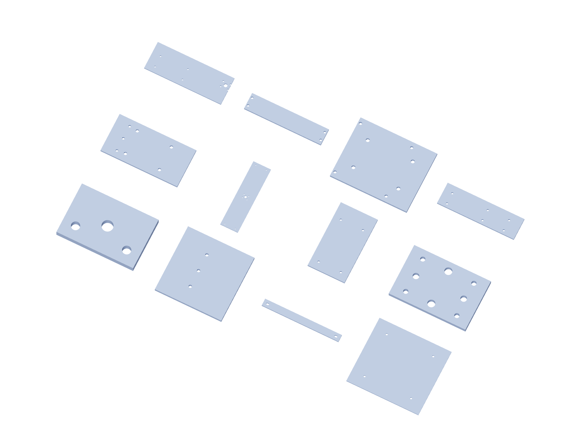

Kit / fabrication09 / 179
Metal kit / 3
6061 aluminum dimensions are finished blank sizes. Bought angles remain angles; shafts, bearings and guide blocks are separate purchased parts.

| Part | Qty | Finished blank / mm |
|---|---|---|
torque-redirect-bracket | 1 | 60 × 40 × 6.35 |
yaw-head-adapter | 1 | 120 × 120 × 6.35 |
z-head-diagonal | 1 | 275 × 25 × 6.35 |
rotator-platform | 1 | 325 × 300 × 6.35 |
yaw-bearing-back | 1 | 180 × 90 × 6.35 |
yaw-crossbar | 1 | 100 × 380 × 6.35 |
yaw-side | 2 | 100 × 180 × 6.35 |
pitch-bearing-foot | 2 | 90 × 60 × 6.35 |
pitch-side | 2 | 280 × 100 × 6.35 |
pitch-rear-crossbar | 2 | 190 × 40 × 6.35 |
roll-bearing-foot | 1 | 150 × 120 × 6.35 |
roll-cradle-side | 2 | 216 × 60 × 6.35 |
Use gun-positioner-drill-templates.pdf at actual size. The 3D STEP and registered projections govern formed angles and hub faces.